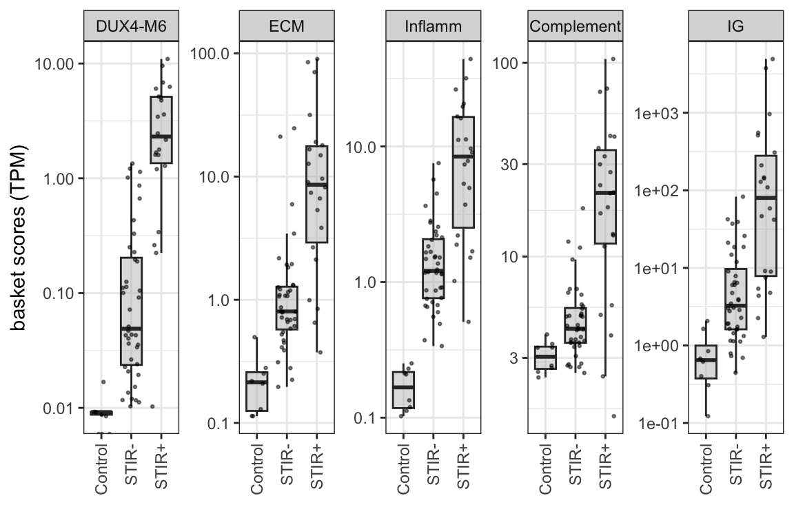

6 Inflammatory, ECM, complement activation and immunoglobulins signatures
Describe how the basket genes were curated and their association to each other and to STIR status. Finally show the comprehensive correlation test
6.1 Basket genes representing FSHD signatures
- Extracellular matrix (ECM)
- Inflammatory
- Complement pathway activation
- Immunoglobulins (IG)
Load the datasets and parameters
# define parameters and load datasets: bilat_dds and longitudinal_dds
pkg_dir <- "/Users/cwon2/CompBio/Wellstone_BiLateral_Biopsy"
fig_dir <- file.path(pkg_dir, "figures", "immune-infiltration")
source(file.path(pkg_dir, "scripts", "load_variables_and_datasets.R"))
source(file.path(pkg_dir, "scripts", "viz_tools.R"))
load(file.path(pkg_dir, "data", "all_baskets.rda"))
load(file.path(pkg_dir, "data", "control_baskets.rda"))
load(file.path(pkg_dir, "data", "comprehensive_df.rda"))6.2 Association with STIR status
6.2.1 Bilateral samples
basket genes that have very low counts in the bilat samples
all_baskets[["DUX4-M"]] %>%
dplyr::filter(gencode_v35 %in% c("ENSG00000277862.1", "ENSG00000280267.4", "ENSG00000182330.10"))
#> [1] gene_id_v88 ens_id gencode_v35 gene_name
#> [5] gene_type
#> <0 rows> (or 0-length row.names)
basket_name = names(all_baskets)[c(2, 4, 5, 6, 7)]
all_baskets_TPM <- map_dfr(all_baskets[basket_name], function(x) {
id <- x %>%
dplyr::filter(gencode_v35 %in% rownames(bilat_dds)) %>%
pull(gencode_v35)
assays(bilat_dds[id])[["TPM"]] %>%
as.data.frame() %>%
summarise(across(where(is.numeric), mean)) %>%
t(.) %>%
as.data.frame() %>%
rownames_to_column(var="sample_name") %>%
#add_column(basket = name) %>%
dplyr::rename(TPM = V1)
}, .id="basket") %>%
dplyr::mutate(basket = factor(basket, levels=basket_name),
sample_id = str_replace(sample_name, "[b]*_.*", ""), .before="sample_name") %>%
dplyr::select(-sample_name)
all_baskets_TPM %>%
left_join(dplyr::select(comprehensive_df, sample_id, STIR_status),
by="sample_id") %>%
add_row(control_baskets %>% add_column(STIR_status = "Control")) %>%
dplyr::mutate(STIR_status = factor(STIR_status, levels=c("Control", "STIR-", "STIR+"))) %>%
dplyr::filter(!sample_id %in% c("13-0009R", "13-0007R")) %>%
dplyr::filter(! basket %in% c("DUX4-M12", "DUX4-M")) %>%
ggplot(aes(x=STIR_status, y=TPM)) +
geom_boxplot(width=0.7, outlier.shape=NA, fill="grey75", alpha=0.5) +
geom_jitter(width = 0.3, size=0.5, alpha=0.5) +
facet_wrap(~ basket, scales="free_y", nrow=1) +
theme_bw() +
labs(x="", y="basket scores (TPM)") +
scale_y_continuous(trans='log10') +
theme(axis.text.x = element_text(angle = 90, vjust = 0.5, hjust=1)) 
6.3 Visualization of five baskets along with other MRI and pathological data
The following heatmap displays the expression levels of five basket genes, along with MRI characteristics, histopathology, and compliment scores. The colors represent the row-wise z-score of log10 TPM values. We have included the Muscle-Low samples in this visualization to highlight their distinct characteristics, such as low expression levels in DUX4 baskets and high expression in inflammatory/ECM factors.